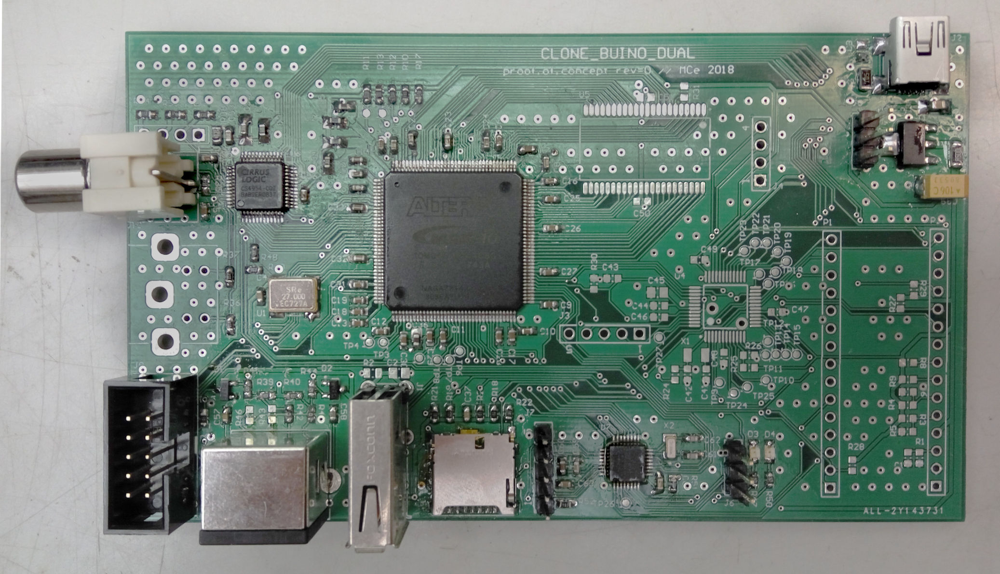
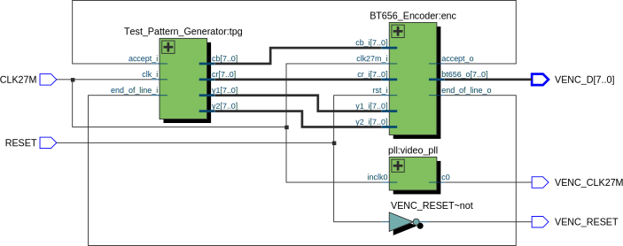
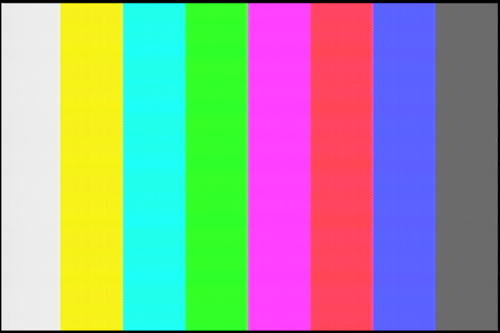
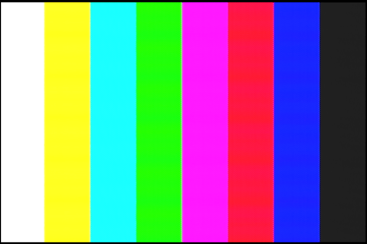

CS4954: displaying picture
After a quick color bars demo from the last time, today we will get something to show up on the screen.

Steps to do:
- assemble the hardware (done!)
- understand the required timing & picture encoding (done!)
- appropriately configure the control registers
- feed image data to the chip
- see it on the screen!
CS4954 register settings
Unlike image generation, which is done by the FPGA, configuration of the CS4954 internal registers is achieved over I2C by an application processor.
The configuration is, in fact, quite easy:
- CONTROL_0: Set CCIR565=1, IN_MODE=1, CBCR_UV=1 and clear all other bits
- CONTROL_4: Set COMDAC_PD=0, leave default values of other bits
- CONTROL_5: Set EN_COM=1, LOW_IMP=1, leave default values of other bits
(Default values assumed for all other registers)
FPGA implementation
To implement code generation in an FPGA, we will need to build up a few functional blocks:
- BT.656 stream encoder
- Picture/pattern generator
- A top-level module to wire everything up
Stream encoder
We would like to encapsulate the somewhat messy synchronization timing, therefore the stream encoder will need to keep track of all the timing. It has to know where a new field/scanline begins and it needs to emit the synchronization words. Ultimately, we will get away with a bunch of state machines and a few timing registers. The RTL entity (we will use Verilog) can be parametrized to allow, for example, PAL mode operation (which differs from NTSC in the frame rate, number of lines and number of cycles per line).
Picture generator
The question is, what to show on the screen? The CS4954 datasheet gave me an idea: since the colors used for the built-in color bar generator are described in the datasheet, why not begin by trying to replicate this simple test pattern?
| Color | Y | Cb | Cr | R | G | B |
|---|---|---|---|---|---|---|
| white | 167 | 0 | 0 | 176 | 176 | 176 |
| yellow | 156 | -84 | 14 | 185 | 185 | -6 |
| cyan | 138 | 28 | -84 | 8 | 199 | 199 |
| green | 127 | -56 | -70 | 18 | 208 | 16 |
| magenta | 110 | 56 | 70 | 221 | 31 | 222 |
| red | 99 | -28 | 84 | 231 | 39 | 40 |
| blue | 81 | 84 | -14 | 53 | 54 | 245 |
| black | 70 | 0 | 0 | 63 | 63 | 63 |
From the RGB values you can see that black is far from actually black and white is far from white. What is going on here? For now, let’s try to use the provided values first, and later we can investigate.
Integration
To put things where they belong on the screen, the picture generator needs to be somehow synchronized with the stream encoder. As a person with a mathematics or CS background, the first idea might be to tread the picture as a function f: (x, y) -> (color). Accordingly, the stream encoder could output the current X & Y coordinates, and the picture generator would provide the corresponding color. One of the problems here is that we are dealing with synchronous logic, so by the current X & Y are output from the stream encoder, it is already too late. So the X, Y should be ahead by a few cycles. How many? Depends on how much time the picture generator needs! The theoretical minimum for bi-directional synchronous communication would be 2 cycles.
There is another, more “hardware-friendly” approach: emit 1-cycle synchronization strobes at the beginning and end of each frame and at the start and end of each line. Having both the start and end makes it easier to deal with some off-by-1 situations which can lead to more understandable code; for example, if you need to scan image out of a memory, it is convenient to reset the pointer at the start of a field, but increment it at the end of each line. If some of the signals are unused, they will be optimized out anyway. Similarly, for each image pixel pair (a Cb–Y1–Cr–Y2 tuple), an accept strobe is generated ater the pixel data is latched, and a pre-accept pulse is generated exactly 2 cycles ahead.
It remains to be seen if this interface is a suitable choice for building up a simple video pipeline. Perhaps it will prove necessary to split out the timing generation from the stream encoder, so that video data can pass through multiple pipeline stages along with the synchronization signals.

VENC_* outputs go directly to the corresponding pins on the CS4954. video_pll delays the 27MHz clock by 90° so that the signals can comfortably propagate before the CS4954 sees the rising edge of the clock.
Not shown: I2C bus for configuration.
Since the test pattern is completely invariant in the vertical direction, it actually needs just 2 control signals (start-of-line and pixel accept); things will get more interesting once we start to generate text or bitmap output
Optimization & improvements
Color bars
Using the datasheet-provided values for the color bars results in a washed out picture as can be seen in the screenshot below. From skimming this article about SMTPE color bars, it would seem that we are generating the so-called 75% variant. Indeed, multiplying the specified Cb and Cr values by ⁴⁄₃ brings them to the full expected range of 16-240; however, I have not been able to find the equation for fixing up Y.

Fortunately, since the RGB-to-YCbCr conversion matrix is well-known, we can easily generate our own table using full-scale RGB values:
import numpy
# RGB in 0..1; YCbCr in 8-bit space
RGB_to_YCbCr = numpy.array([
[ 65.481, 128.553, 24.966, 16],
[ -37.797, -74.203, 112.000, 128],
[ 112.000, -93.786, -18.214, 128],
[ 0, 0, 0, 1],
])
# white, yellow, cyan, green, magenta, red, blue, black
Rs = [1, 1, 0, 0, 1, 1, 0, 0]
Gs = [1, 1, 1, 1, 0, 0, 0, 0]
Bs = [1, 0, 1, 0, 1, 0, 1, 0]
for R, G, B in zip(Rs, Gs, Bs):
Y, Cb, Cr, _ = RGB_to_YCbCr @ [R / 255, G / 255, B / 255, 1]
print(f"{int(round(Y)):>3} {int(round(Cb - 128)):>4} {int(round(Cr - 128)):>4}")
To allow direct comparison, Cb and Cr are again displayed in signed 8-bit format.
| Color | Y | Cb | Cr | R | G | B |
|---|---|---|---|---|---|---|
| white | 235 | 0 | 0 | 255 | 255 | 255 |
| yellow | 210 | -112 | 18 | 255 | 255 | 0 |
| cyan | 170 | 38 | -112 | 0 | 255 | 255 |
| green | 145 | -74 | -94 | 0 | 255 | 0 |
| magenta | 106 | 74 | 94 | 255 | 0 | 255 |
| red | 81 | -38 | 112 | 255 | 0 | 0 |
| blue | 41 | 112 | -18 | 0 | 0 | 255 |
| black | 16 | 0 | 0 | 0 | 0 | 0 |
And the final result:

Resource usage
After some optimization, the stream encoder get implemented in 120 logic cells and the color bar generator takes up 29 LC in a MAX 10 FPGA.
Next time we will finally look into displaying some text and/or images.